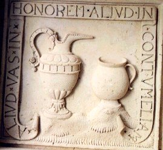
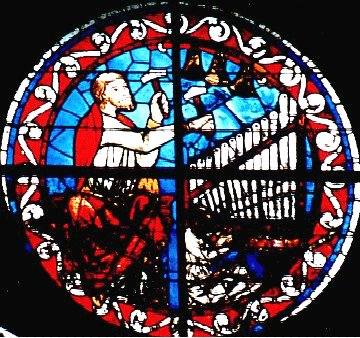
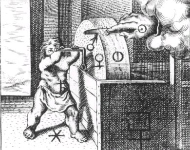
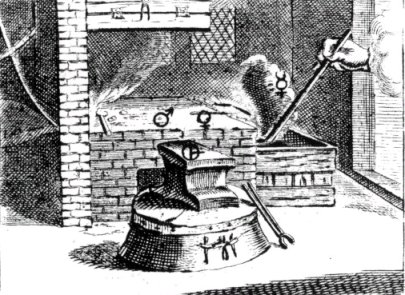

Emblema XV.
revu le 5 mai 2002
Opus siguli, consistens in sicco & humido, te doceat.
(Que l’œuvre du potier, qui se compose de sec et d’humide, t’instruise1.)
Vois comme le potier d’un mouvement rapide
Meut l’axe de sa roue pour façonner ses vases2.
Du pied, il mêle l’eau à l’argile, et tempère
A chaque instant la soif de cette poudre sèche,
Fondant son art entier sur ces deux éléments3.
Instruit par cet exemple, imite-le ; prends soin
Entre la terre et l’eau de garder l’équilibre4.
De même que notre globe a pris la forme d’un corps rond par l’effet de l’union étroite de la terre et de l’eau, ainsi l'œuvre du potier paraît tout particulièrement composée des mêmes éléments, le sec et l’humide, de manière que l’un soit tempéré par l’autre. Si la terre était sans eau, l’océan, la mer, les lacs, les fleuves, les fontaines n’existeraient pas auprès d’elle ; elle-même ne porterait aucun fruit, mais demeurerait stérile. D’autre part si l’eau n’était pas recueillie dans les cavités de la terre mais entourait celle-ci, elle couvrirait facilement la terre entière, qui demeurerait inhabitable. Mais comme l’une a pénétré dans l’autre d’une façon tout amicale et que grâce à leur mutuelle étreinte l’eau a modéré la sécheresse de la terre et la terre l’humidité de l’eau, la fertilité et la commodité de chacun des deux éléments sont mises en lumière5. De semblable manière le potier mélange du limon à l’eau pour en faire une masse propre à être modelée ; il façonne celle-ci à l’aide de sa roue et l’expose à l’air pour qu’elle se dessèche peu à peu. Puis il ajoute la violence du feu afin que ses vases acquièrent une dureté convenable et s’affermissent en une pierre durable, capable de résister à l’eau et au feu6.
Les philosophes attestent que l’on procède de la sorte dans l'œuvre naturelle et qu’il faut donc prendre exemple sur les potiers. Dans les deux cas il y a une grande affinité entre le sec et l’humide, c’est-à-dire entre la terre et l’eau. Mais nous ne doutons pas que le mode de cuisson ainsi que la matière et la forme des éléments qui doivent être mis en composition ne diffèrent considérablement. Les terres cuites des potiers ont une forme artificielle ; la teinture des philosophes possède une forme entièrement naturelle, dont la noblesse l’emporte d’autant plus sur celle des vases que la matière est plus excellente7. Dans les deux cas il s’agit certes d’un ouvrage de terre, mais dans l'œuvre philosophique il n’est rien, dit-on, qui ne réclame le ciel de l’air, tandis que dans l'autre domine une terre grasse et impure8. Dans les deux cas le résultat est une pierre, ici commune, et là, philosophique. Abusée par ce nom, une certaine personne enferma dans un panier pour une durée déterminée une grande quantité de pierres artificielles ou briques et dans un autre des silex blanchâtres ; elle procéda sur ces pierres à des conjurations diaboliques, au moyen desquelles les unes auraient dû être converties en argent et les autres en or pur. Elle pensait que c’était là les pierres des philosophes et avait dépensé une grande somme d’argent pour acheter en même temps diverses choses et s’attendait à obtenir au bout du temps fixé de l’argent et de l’or nouveaux ; mais comme rien n’apparaissait et que les pierres ne s’étaient pas changées en l’or qu’on espérait, la mort mit un terme à sa confusion. On ne doit pas en effet rechercher l’or et l’argent là où ils ne sont pas naturellement contenus, car la magie diabolique n’a pas sa place dans ces œuvres divines, mais diffère d’elles autant que son auteur diffère d’un homme de piété et de dévotion, et l’enfer du ciel9.
De même, si l’on avait la véritable pierre philosophale, on ne devrait pas se persuader de pouvoir réaliser grâce à elle des choses impossibles, suivant l’avertissement d’Isaac10, car nul n’est contraint à des choses impossibles, que ce soit par les lois de la nature ou par celles de la Cité. Que chacun examine donc lui-même, lorsqu’on parle de la transmutation de gemmes ou de la malléabilité conférée au verre au moyen de la pierre, si ce sont là des effets possibles et conformes à la nature ou non11. Geber affirme que les philosophes ont dit beaucoup de choses par allégorie et que lui-même, là où il s’est exprimé clairement, n’a rien dit12 ; que, par contre, il a dit la vérité lorsqu’il a utilisé des figures, cachant en quelque sorte le grain sous la paille. Ce que l’on sème, on le récoltera ; c’est ce qui a lieu dans le monde végétal et animal, bien que parfois les semences donnent naissance à des espèces différentes. Il faudra examiner si ce principe s’applique aux métaux, bien qu’ils ne se propagent pas au moyen de semences. Ici il n’y a que des parties homogènes, soufre et argent-vif, là elles sont hétérogènes ou organiques. Ici il n’y a pas de réceptacle pour les semences, là il en existe un13 ; ici on ne rencontre ni nutrition, ni augmentation, ni extension dans toutes les dimensions ; là elles existent au plus haut point14. En outre les métaux sont des poids élémentés qui ne connaissent que la mixtion ; les autres corps, en plus de la mixtion, reçoivent une âme végétative et sensitive. Cependant il est vrai, sans aucun doute, qu’il existe dans les lieux souterrains quelque chose qui n’est pas encore de l’or mais qui en deviendra par l'œuvre de la nature, au bout de mille ans15. Qui niera qu’il y ait là une semence analogue de l’or ? Comme l’or et la nature aurifique sont de même origine, bien que la forme de celle-ci soit plus noble, une fois qu’on aura reconnu la semence de l’or, on connaîtra également celle de cette nature. Les philosophes affirment que c’est le sec et l’humide, c’est-à-dire le soufre et l’argent-vif, et qu’on doit la demander, très pure à deux montagnes16.
Notes1. C'est un chapitre important. Dans sa trilogie, Fulcanelli revient maintes fois sur l'importance du travail qu'effectue le potier au regard de ce qu'on y peut déceler d'analogie hermétique avec le travail du Grand oeuvre. Piccolpassi [1, 2] est nommé plusieurs fois aussi par E. Canseliet. Le sec et l'humide renvoient à deux éléments de Platon : la Terre et l'Eau [Idée alchimique, V].

FIGURE I
(caisson n°2 de la série 8 - galerie du château de Dampierre - le pot de terre et le pot de fer)2. l'alchimiste façonne aussi son vase à sa manière et c'est une double roue qu'il utilise. Par l'axe, il trouve le fixe et par le périmètre de la roue, il mesure le volatil. Quant au vase, il s'agit du vase dit de nature.
3. Maier parle d'or...Nous laissons au lecteur le soin de retrouver les références sur l'argile [plus de 70 occurences]. Ce qui nous laisse un peu perplexe, c'est qu'il s'agisse d'une poudre sèche. Mais enfin, laissons cela. Pour aider l'étudiant, nous lui conseillerons de lire la section sur le Mercure, où il verra en quoi l'argile est liée, d'une manière particulière à l'Ecrevisse [signe du Cancer], au croissant de lune et à la branche du compas. Il comprendra que c'est, précisément, mais sans qu'il s'agisse d'une nécessité absolue, de l'argile qu'ait tiré le sel des Sages. Il lira aussi avec profit les Enigmes, etc. d'Esprit Gobineau de Montluisant.
4. jeu de mots à comprendre par cabale, prévenant l'impétrant de la nécessité absolue d'éviter l'hydropisie de son BasileuV.
5. Rappelons que la nature a opéré beaucoup de ses synthèses cristallines par la voie humide. Voyez ici la section sur cette voie et celle sur le Mercure de nature. Voyez aussi les travaux de Daubrée sur le rôle minéralisateur de l'étain. Mais les alchimistes ne pouvaient pas travailler avec cette voie, car elle exige des conditions de température et surtout de pression incompatibles avec celles que peut supporter un matras. Voyez encore les travaux de Daubrée et d'Achille Delesse sur le métamorphisme des roches.
6. Il faut bien voir ici que la roue est l'hiéroglyphe du temps. Dans un des panneaux pétrés de Notre-Dame, Fulcanelli s'est attardé sur ce qui semble bien correspondre à l'un des symboles majeurs de l'art.
FIGURE II
(vitrail de la cathédrale de Bourges - le feu de roue)Nous voyons un personnage qui pratique l'art de la musique sur un portatif et sur un carillon. Il fait ainsi tourner la roue du cercle extérieur où l'on observe une ligne blanche, se contournant, plongée dans une substance couleur de feu, cernée par un liseré d'eau. Il s'agit d'une variation sur le feu de roue, tel qu'on le voit pratiqué par un Adepte, sur l'un des tableaux lapidaires de Notre-Dame, en un quatre-feuille analysé par Fulcanelli dans le Mystère des Cathédrales. Ce travail, c'est celui de la Grande coction que l'on devine à la double roue sur la gauche du médaillon. La première roue, contrairement à ce qui est représenté sur la figure, est d'un diamètre nettement plus petit que la seconde. Elle tourne donc plus vite : c'est le premier temps de la Coction hermétique, la voie droite et verticale du signe 4 que l'on aperçoit sur la cheminée alchimique du château de Fontenay-Le-Comte. Le deuxième temps est l'un des secrets les mieux tenus de l'oeuvre. Il nécessite l'emploi de la seconde roue, qui tourne nettement plus lentement que la première. On l'aura compris, ce secret consiste à respecter des paliers dans la décroissance lente et très progressive de la température, telle que celle qui a conduit Réaumur à observer la dévitrification du verre.
7. Maier veut dire en cela qu'il faut trouver un procédé « de nature », chose qu'ont répétée tous les maîtres de l'Art, à commencer par le Bon Trévisan.
8. Ceci demande plus de réflexion mais il doit être notable que les deux ouvrages soient de terre, ce qui en un sens est exact. La phrase « il n'est rien qui réclame le ciel de l'air » est troublante. Le ciel, en latin, caelum, veut aussi signifier le burin du marbrier [1, 2, 3, 4, 5, 6, 7, 8, 9, 10, 11, 12, 13, 14, 15,]. Le ciel de l'Air représente le Soufre rouge qui est sublimé dans le Mercure. C'est évidemment difficile à comprendre et il est certain que l'apprentissage des textes est nécessaire pour « sentir » ce point de science plus, d'ailleurs que pour l'expliquer réellement. Ce ciel de l'air est explicitement cité par Artéphius, ainsi que chevreul nous l'a rapporté dans son Résumé de l'Histoire de la Matière et dans son étude sur la Clavis Majores Sapientiae, consacrée à une recension sur Artéphius et le trio d'alchimistes normands [Nicolas de Valois, Vicot et Grosparmy]. C'est ainsi qu'Aristote a envisagé le Ciel.
9. pour une histoire de la magie, voir une critique de Chevreul sur Eusèbe Salverte. Y-a-t-il un trait de cabale lancé ici par Maier ? C'est possible. D'un côté, nous avons des briques, c'est-à-dire de l'argile cuite sous forme de briques [nommées pierres artificielles, ce que l'on veut bien croire] et d'un autre côté, du silex. Or, Maier a déjà parlé du silex en son chapitre 4ème. Et le silex a un rapport avec le sable, si l'on doit en croire Buffon. Notez que Leibniz confondait le silex, le sable et le calcaire. Mais l'idée générale est là, avec d'un côté un corps « cuit » et de l'autre comme un apprêt dont on veut tirer des propriétés que nous pourrions qualifier d'occultes, si ce mot n'était carié. Evidemment, sous le sable, le silex ou le cristal de roche, on aura reconnu la silice. Eh Certes ! C'est à chaux et à sable qu'est bâtie notre Pierre. Quand on saura que le silex contient pratiquement toujours un peu de fer, on aura aussi identifié un Soufre rouge. Nous pourions encore ajouter que le silex était estimé des Egyptiens : la brèche verte d'Egypte est rangée parfois parmi les marbres mais cette roche est formée de fragments arrondis de granite, de porphyre et de pétrosilex agglomérés par un ciment siliceux de couleur verdâtre. Les Egyptiens tenaient cette brèche en grande estime et l'ont fréquemment employée à la confection de colonnes, de sarcophages et de divers objets d'art. Enfin, le silex a contribué à l'évolution de l'argile vers la porcelaine, s'il faut en croire les travaux des Anglais sur la terre de pipe. Il ne faut pas oublier la pierre meulière que Fulcanelli a observée dans un des caissons de la galerie du château de Dampierre-sur-Boutonne : Les pierres meulières, entre lesquelles on écrase le blé
FIGURE III
(Le Lion d'Or ou Vinaigre des Sages - De Goude Leeuw, 1675 : pierre meulière)comme les silex avec lesquels on fait les pierres à fusil et à briquet ou les grès qu'on utilise pour le pavage des routes, etc. constituent de l'acide silicique simplement mélangé de quelques substances étrangères, notamment l'alumine et l'oxyde de fer. La figure III nous donne un exemple de pierre meulière hermétique dans laquelle on voit la ponticité d'Arès user progressivement le Soufre solaire. Observez le symbole du Nitre philosophique, apposé sur la meule. L'acide silicique est aussi très répandu dans le règne organique ; il est surtout très abondant dans l'épiderme des graminées, des palmiers [cf. section sur les blasons alchimiques]. La paille du blé en renferme jusqu'à 70 %.
10. Maier veut parler d'Isaac Le Hollandais dont Chevreul dit beaucoup de bien. Voyez l'Oeuvre de Saturne.
11. C'est une question des plus intéressantes que pose Maier. Nous l'avions déjà abordé lors de l'examen du Filet d'Ariadne, attribué à Battsdorf. Voici de nouveaux éléments sur le verre malléable : L'attention du public fut vivement excitée, en 18S5, par l'annonce d'une découverte bien digne, en effet, d'éveiller un intérêt unanime. De la simple argile de nos terrains, de la marne des champs, on avait, disait-on, retiré un métal que ses caractères chimiques rangent tout à côté des métaux précieux, et capable de résister, comme l'or, le platine et l'argent, à l'action des causes extérieures d'altération. A ces premiers caractères ce métal joignait la singulière propriété d'être plus léger que le verre, et d'être fusible à une température modérée, ce qui permettait de le mouler sous toutes les formes. Ces diverses assertions, qui excitèrent à bon droit beaucoup de surprise, n'avaient pourtant rien d'exagéré. La chronique scientifique de la Science pittoresque (27 mai) a donné une analyse de ce qui a été dit à la Sorbonne, par M. H. Sainte-Claire Deville, sur l'aluminium, et nous y lisons ce qui suit :« M. Sainte-Claire Deville a terminé la soirée en racontant l'histoire d'un prédécesseur dans la découverte de l'aluminium : Un malheureux ouvrier (faber) put extraire d'un verre alumineux une matière évidemment métallique dont il fit une coupe, qu'il présenta à l'un des successeurs d'Auguste (à Tibère) dans les premiers temps de l'empire romain, il y a dix-huit cents ans à peu près. L'empereur l'accueillit, l'admira. Le faber, pour produire un étonnement plus profond, jeta la coupe par terre ; elle ne fut que bossuée, et, à l'aide d'un petit marteau, elle fut réparée aussi facilement que si elle eût été d'or ou d'argent. Ce métal, tiré de l'argile, était, ne pouvait être que l'aluminium. On lui demande si son secret est connu de lui seul. II répond : de lui seul et de Jupiter. L'empereur, craignant que l'or et l'argent ne fussent dépréciés par une matière aussi commune que l'argile, fit détruire les ateliers de l'ouvrier, et quant à celui-ci, on lui fit couper la tête sans retard : Eum decollari fussit imperator... — Ainsi le faber qui découvrit l'aluminium il y a dix-huit cents ans vit détruire ses ateliers et fut décapité.—M. Sainte-Claire Deville, qui a retrouvé la composition de ce précieux métal, s'est vu ouvrir par l'Empereur, il y a dix ans, un crédit considérable pour fonder l'Industrie aujourd'hui en progrès ; il est professeur de la Faculté des sciences ; — il est membre de l'Institut, — il est officier de la Légion d'honneur. »[sur Sainte Claire Deville, cf. Mercure]. La composition de l'aluminium n'a-t-elle pas été retrouvée en 1827 par le chimiste Woehler, de Gœttingue ? M. H. Sainte-Claire Deville est parvenu le premier à obtenir l'aluminium à l'état pur et en quantité suffisante pour être employé dans l'industrie. Mais, s'il faut s'en rapporter au Moniteur universel (29 août 1864), M. Corbelli serait plus heureux encore que M. Sainte-Claire Deville, car il aurait trouvé un procédé plus simple et plus économique, pour extraire l'aluminium de l'argile, que tous ceux employés jusqu'à ce jour. [d'après H. DE L' ISLE. (Maubeuge)].
Qui était donc ce mystérieux M. Corbelli ? Nous n'avons pu en retrouver la moindre trace, tant sur le serveur Gallica que sur Internet. Si un lecteur possédait un exemplaire du Moniteur Universel, peut-être pourrait-il nous en apprendre davantage ? Voici d'autres notes sur le verre malléable, tirées de L'intermédiaire des chercheurs et curieux Bimens : correspondance littéraire, "Notes and queries" français, questions et réponses, communications diverses à l'usage de tous, littérateurs et gens du monde, artistes, bibliophiles, archéologues, généalogistes, etc.1)- Tibère et le verre malléable (XXIV, 244, 374). —Pline est mort en l'année 79,
et Pétrone en l'année 66, car c'est du Magister elegantiarum qu'il s'agit. C'est
lui qui, dans le Satyricon.a mis l'histoire dans la bouche de Trimalcion, l'hôte de
ce banquet dont tant de gens parlent par ouî-dire. Trimalcion est un hâbleur, de ces gens qui parlent de tout, à voix haute, dans un repas, sont insupportables aux autres par leur aplomb et leur sans-gêne ; gens mal élevés dont on se débarrasse au plus tôt. Mais ici la chose n'était pas possible, puisque Trimalcion était chez lui. Aussi en prend-il à son aise pour régaler ses convives des histoires les plus absurdes qu'il nous faut bien reproduire, avant que d'en arriver au fameux passage, afin de montrer quelle créance on doit avoir en ce « document », non pas humain, comme ceux de certains romanciers d'aujourd'hui, mais industriel, qui se trouve dans un roman du Ier siècle. «...Et peut-être me demanderez-vous pourquoi je possède seul des vases corinthiens ? Parce que le bronzier de qui je les achète s'appelle Corinthe, Et qui peut avoir du corinthien s'il ne possède lui-même Corinthe; Mais n'allez pas supposer que j'ignore qu'ils sont venus et l'origine de Corinthe. Lorsqu'Ilion fut pris, Annibal, cet homme rusé et grand voleur, jeta dans un même bûcher toutes les statues d'airain, d'or et d'argent, et y mit le feu et il en résulta une seule masse de métal.
Après cette heureuse intervention d'Annibal dans la prise de Troie, notre hâbleur ajoute : Moi, je préfère les vases de verre, que certains dédaignent. S'ils n'étaient fragiles, je les préférerais même à l'or. Aujourd'hui, c'est matière vile. Il exista cependant un ouvrier (faber) qui fit un vase de verre qui était incassable (phialam vitream quae non frangebatur). Admis devant César avec son présent, et l'ayant repris de ses rnains, il It jeta sur le pavé. César faillit s'évanouir. Mais lui reprit le vase qui n'était que bossué, comme s'il eût été d'airain. Ensuite il tira de son sein un petit marteau et tout à loisir le répara. Cela fait, il pensait posséder le ciel de Jupiter, surtout lorsqu'on lui demanda si personne autre ne connaissait la fabrication de ce verre ? Prends garde. Lorsqu'il eut nié (que personne autre connût le secret), César ordonna de le décapiter, parce que, s'il était connu, l'or ne vaudrait pas plus que la boue.Poursuivant ses hâbleries sur les vases d'argent, Trimalcion parle d'une coupe « où Dédale a enfermé Niobé dans le cheval de Troie ».
On voit, d'après cette longue citation, quel est le personnage, et quel fondement on doit faire sur son récit. On voit de plus qu'il y est question d'un César quelconque et non du Tibère dont parle Pline. Celui-ci, décidément, n'était pas au courant de la littérature des romanciers, ses contemporains. ALF. D.2)-Tibère et le verre malléable (XXIV, 244, 374). — Dans mon livre l'Art de la Verrerie, j'ai dit que le verre malléable était du domaine de la fable.J'ai parlé en homme du métier, et mon avis est partagé par toutes les maisons de verrerie. Les anciens ont produit le vase de Portland et le vase de la Vendange, du musée de Naples; aucune pièce de la verrerie moderne ne peut être comparéeà ces deux pièces comme œuvre d'art, mais il ne faut pas conclure de cette supériorité que les verriers de l'antiquité ont su donner la malléabilité à une substance qui ne peut, par sa nature même, recevoir sa parure qu'à chaud, et qui,
une fois refroidie, ne peut plus être attaquée que par la taille, par usure, la gravure à la molette et l'acide fluorhydrique. Je remercie, du reste, mon honorable interpellateur de la bienveillance qu'il m'a témoignée, GERSPACH.3)-Verre malléable (VIII, 394). — Relire l'Intermédiaire, t.1, p. 282, sous la rubrique ; Découverte de l'Aluminium. Ne peut-on pas y voir le verre malléable dont parle Pline ? H. DE L'ISLE
4)- Verre malléable : citation de Fulcanelli, tirée des Demeures Philosophales.
De tous ces éléments, il résulte que Battsdorf tient pour une partie du secret des Sages la préparation de l'aluminium, qui est le verre malléable des Anciens. La réaction de Tibère - puisqu'il faut replacer les faits dans leur contexte historique - rend pleinement compte de ce que disent les alchimistes quand ils assurent que tous possèdent la matière première, qu'ils la foulent aux pieds et sont comme des aveugles...Cela explique aussi pourquoi nos Artistes professent que leur matière première - et la Pierre - sont de plus haute valeur que l'or lui-même. Enfin, il est remarquable de lire cette relation sur le verre malléable sous la plume de Fulcanelli. Cela ne peut que nous conforter dans l'hypothèse que l'auteur qui a pris ce pseudonyme était au fait des dernières découvertes en métallurgie, en chimie, et qu'il cotoyait certainement des savants distingués, membres de l'Académie des Sciences. Mais, encore une fois, nous devons affirmer le doute où nous sommes de l'existence réelle de Fulcanelli.
Parmi les autres propriétés merveilleuses attribuées à la pierre philosophale, de très vieux auteurs citent maints exemples de transformation du cristal en rubis et du quartz en diamant, à l'aide d'une sorte de trempe progressive. Ils envisagent même la possibilité de rendre le verre ductile et malléable ce que malgré l'affirmation de Cyliani [Hermès Dévoilé]nous nous garderons bien de certifier car la manière d'agir propre a l'élixir - contraction et durcissement - semble contraire a l'obtention d'un semblable effet Quoi qu'il en soit Christophe Merret cite cette opi nion et en parle ainsi dans la Préface de son traité [Néri, Merret et Kunckel, l'Art de la Verrerie, Paris, Durand et Pissot, 1752]. Pour ce qui est de la malléabilité du verre, dit-il sur laquelle les alchymistes fondent la possibilité de leur Elixir elle paroit appuyée mais peu solide ment sur le passage suivant de Pline HN XXXVI ch xxxi. On assure que du temps de Tibère on trouva un moyen de rendre le verre flexible et que tout l'attelier de l'ouvrier qui en étoit l'inventeur fut détruit de peur que cette découverte n'ôtat le prix à l'or ou l'argent et au cuivre. Mais ce bruit quoique assez répandu n'en est pas plus cer tain D'autres auteurs ont raconté le même fait après Pline mais avec quelques circonstances différentes. Dion Cassius, liv. LVII dit : « Dans le temps que le grand Portique vint à pencher, un architecte dont on ignore le nom (parce que la ]alousie de l'empereur empêcha qu'on ne le mit dans les registres) le redressa et en raffermit les fondemens Tibère après l'avoir payé le bannit de Rome. Cet ouvrier revint sous prétexte de deman der grâce l'empereur et laissa tomber en sa présence un verre qui se bossua et qu'il raccommoda sur le champ avec ses mains, espérant obtenir ainsi ce qu il demandoit mais il fut condamné à la mort. » Isidore confirme la même chose ; il ajoute seulement que l'empereur indigné jetta le 'verre sur le pavé mais que l'ouvrier avait nre un marteau et l'ayant raccommodé, Tibère lui demenda s'il y avoit encore quelqu'un qui sut le secret et que l'ouvrier ayant assuré par serment que personne que lui ne le possédoit l'empereur lui fit couper la tête de peur que s'il se divulguoit il ne fit tomber l'or dans le mépris et n'ôtat aux métaux leur valeur. [DM, II, pp. 63-64]
12. Sur Geber, voir prima materia et Chevreul.
13. C'est assez dire que l'argent-vif, qu'il faut se garder de confondre avec le vif-argent, est le vase de nature dans lequel sont présentes les « semences » qui ne sont que des chaux métalliques. Van Helmont aurait parlé d'archées.
14. C'est l'accroissement de la Pierre qui est signifié. Les textes parlent d'augmentation. C'est un processus cristallin en cours.
15. Nous ne pouvons pas suivre ici Maier. Pour une vue historique de cette légende, voyez la Génération des Métaux, avec une préface de Daubrée [Burgbechlein].
16. Voila encore une énigme philosophique. Les deux montagnes sont celles qui apparaissent sur la planche initiale du Triomphe hermétique de Limojon de Saint-Didier ; ce sont les mamelles décrites par Fulcanelli quand il cite l'Azoth de Basile [Mystère des Cathédrales]. Il faut comprendre ici que l'oeuvre requiert un minéral et un métal.
FIGURE IV
(Le Lion d'Or ou Vinaigre des Sages - De Goude Leeuw, 1675 : là reposent les ossements d'Oreste)Le minéral est recueilli des flancs d'une montagne. C'est celle qui est décrite dans le Livre d'Abraham Juif qu'aurait possédé le pseudo-Flamel et où griffons et dragons tiennent leurs dépendances et gîtes ; au sommet de cette montagne est peinte une fleur d'anémone, battue par les vents venant du sud-ouest et du sud-est [Atalanta, I]. C'est cette fleur minérale qui constitue ce fameux minéral. De l'autre montagne est issu le métal « es cavernes de la Terre ». Le soufre est évidemment la teinture de la pierre ou Soufre rouge mais il est possible que Maier évoque aussi le Soufre blanc... il faut donc élire une matière minérale possédant quelque chaux dont nous avons parlé dans la section correspondante. Voyez où reposent les ossements d'Oreste [cf. figure IV] et vous aurez des lumières sur le métal dont l'alchimiste a besoin [sur Oreste, cf. Atalanta, XXVII, XLIII et XLVII].